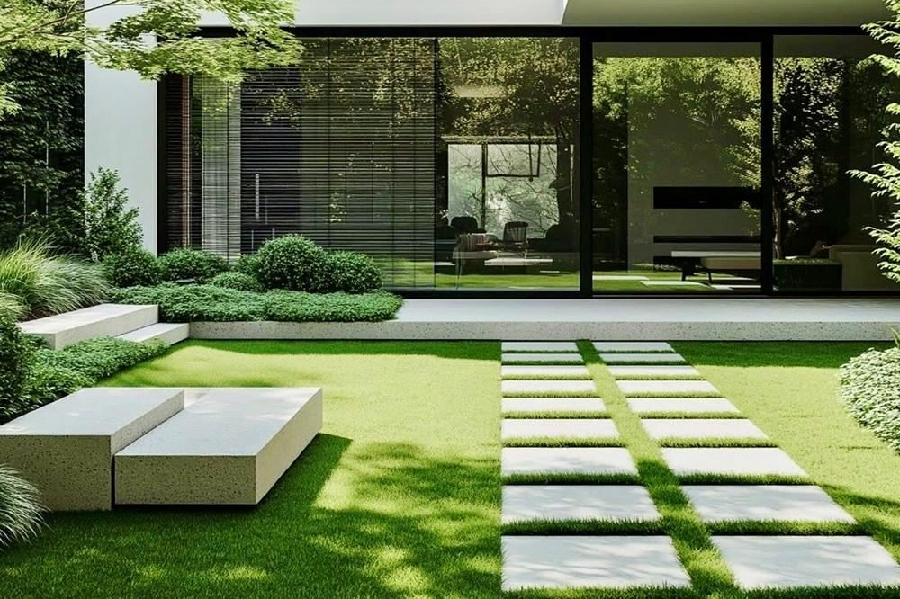
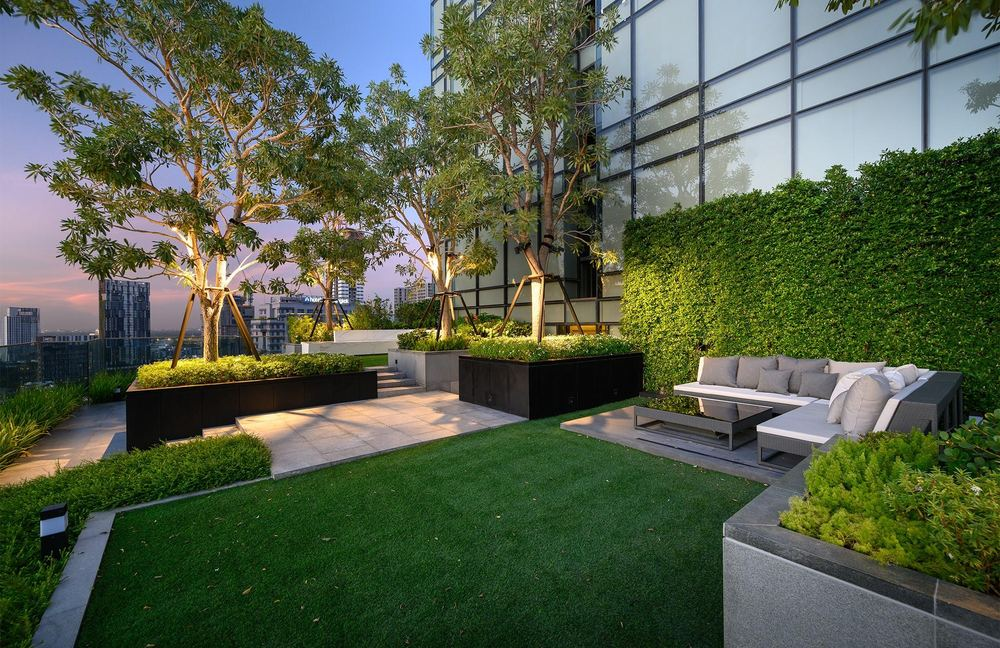

Residential Gardens
Hilltop Flagstone Terrace & Infinity Pool
A golden-hour hilltop sanctuary uniting stepped tan flagstone treads, lavender and hydrangea perennial beds, a stone retaining wall, and a horizon infinity pool.
Browse landscape and garden design inspiration, including planting, stone features, courtyards and outdoor lighting. Images are concept references, not verified completed client projects.
A golden-hour hilltop sanctuary uniting stepped tan flagstone treads, lavender and hydrangea perennial beds, a stone retaining wall, and a horizon infinity pool.

A calm, geometric residential court pairing monolithic cast-stone seating and dual-track pavers with clipped evergreen massing.

An elevated urban terrace combining custom structural tree planters, a dense acoustic hedge wall, and an intimate twilight lounge.

An intimate inner courtyard with landscape stone, sculptural planting, and a quietly expressive composition.

A balanced, minimal garden with refined gravel patterns, shaped greenery, and a calm, balanced garden setting.

A refined outdoor pavilion and water composition articulated through natural stone and modern hardscape.

A softly illuminated arrival garden with lush planting and a sculptural pathway for evening ambience.